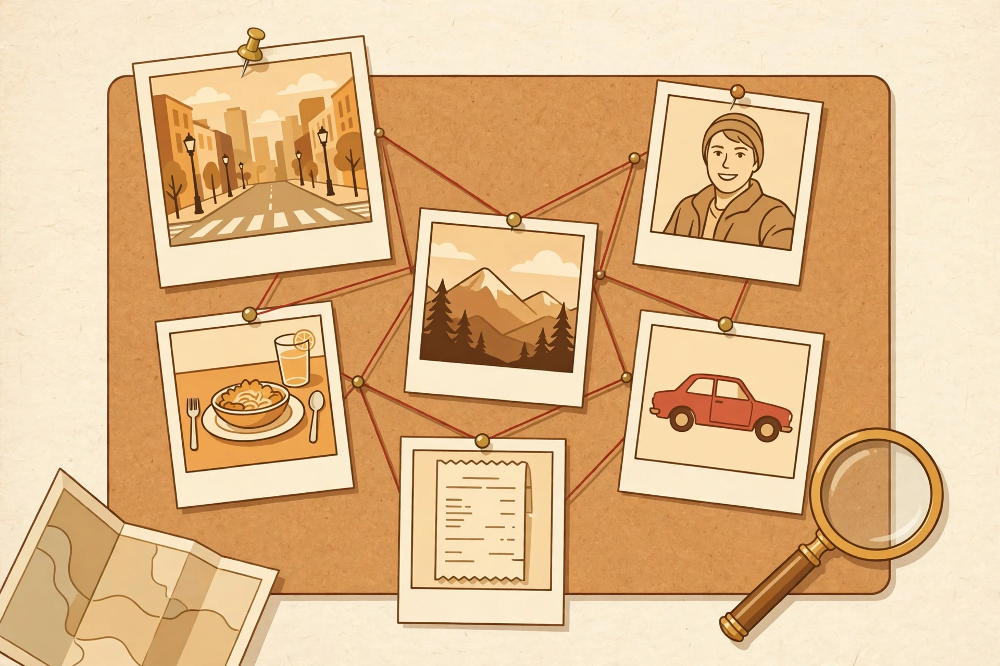

Upload a photo.
Boom — where was it taken?
Drop in any photo — a street scene, a selfie, a receipt, a meal, a window seat, a screenshot — and this investigator first works out what kind of photo it is, then digs through its hidden metadata, the sun's position, and everything actually visible in the frame to work out where and when it was taken.

…or tap to pick one from your gallery. Original camera photos work best — screenshots and social-media downloads usually have their location data stripped out (the site will tell you honestly if that happened).
⚙️ AI settings — your Gemini key
Set up once · FreeYour own Gemini API key — tap to add or change it
The visual investigation (Step 3) runs on Google's Gemini AI with your own free key, so there is no middleman: your photo goes from this browser straight to Google, only when you press Analyse. The metadata investigation (Step 2) needs no key at all.
No key yet? Get one free in about a minute: open Google AI Studio → API keys, sign in, tap Create API key, and paste it here.
🤖 Prefer Muse's eyes?
Manual handoff · Copy & pasteMuse — the assistant behind this page — can run the whole investigation on the same photo: visual clues, reflection clues, anything you tell it about the file, plus the flight cross-check for flight photos. This is a manual handoff, not an automatic upload: tap the button to copy a ready-made investigation prompt, open the Muse app or site, attach the same photo, and paste the prompt in.